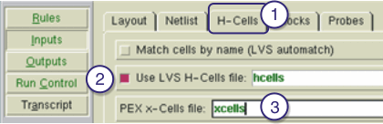

Follow this procedure
to specify cell lists when performing hierarchical extraction.
Note: You do
not need to perform these steps for flat extraction.
Procedure
- Select the H-Cells tab.
- Select
Use LVS H-Cells file and specify the hcell filename (not required
if you specify the use of layout names in the PEX netlist). The Calibre® nmLVS™ tool uses the hcell file. The Calibre
xRC tool uses the xcell file. For more information on the xcell
file, see Hierarchy Control with Xcells.
- Specify the xcell filename
in the PEX x-Cells file field.
Figure 1. Completing the H-Cells Tab